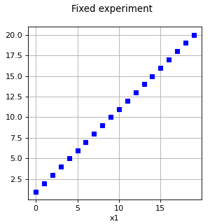
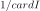
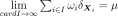

FixedExperiment¶
(Source code, png, hires.png, pdf)

-
class
FixedExperiment(*args)¶ Fixed experiment.
- Available constructors:
FixedExperiment(aSample)
FixedExperiment(aSample, weights)
- Parameters
- aSample2-d sequence of float
Sample that already exists.
- weightssequence of float
Weights of each point of aSample.
See also
Notes
FixedExperiment is a deterministic weighted design of experiments. It enables to take into account a random sample which has been obtained outside the study or at another step of the study. The
generate()method always gives the same sample, aSample, if it is recalled. When not specified, the weights associated to the points are all equal to
. Then the sample aSample is considered as generated from the limit distribution
. ThesetDistribution()method has no side effect, as the distribution is fixed by the initial sample.Examples
>>> import openturns as ot >>> ot.RandomGenerator.SetSeed(0) >>> sample = [[i,i+1] for i in range(5)] >>> experiment = ot.FixedExperiment(sample) >>> print(experiment.generate()) 0 : [ 0 1 ] 1 : [ 1 2 ] 2 : [ 2 3 ] 3 : [ 3 4 ] 4 : [ 4 5 ]
Methods
generate(self)Generate points according to the type of the experiment.
generateWithWeights(self)Generate points and their associated weight according to the type of the experiment.
getClassName(self)Accessor to the object’s name.
getDistribution(self)Accessor to the distribution.
getId(self)Accessor to the object’s id.
getName(self)Accessor to the object’s name.
getShadowedId(self)Accessor to the object’s shadowed id.
getSize(self)Accessor to the size of the generated sample.
getVisibility(self)Accessor to the object’s visibility state.
hasName(self)Test if the object is named.
hasUniformWeights(self)Ask whether the experiment has uniform weights.
hasVisibleName(self)Test if the object has a distinguishable name.
setDistribution(self, distribution)Accessor to the distribution.
setName(self, name)Accessor to the object’s name.
setShadowedId(self, id)Accessor to the object’s shadowed id.
setSize(self, size)Accessor to the size of the generated sample.
setVisibility(self, visible)Accessor to the object’s visibility state.
-
__init__(self, \*args)¶ Initialize self. See help(type(self)) for accurate signature.
-
generate(self)¶ Generate points according to the type of the experiment.
- Returns
- sample
Sample Points
 which constitute the design of experiments
with
which constitute the design of experiments
with  . The sampling method is defined by the nature of
the weighted experiment.
. The sampling method is defined by the nature of
the weighted experiment.
- sample
Examples
>>> import openturns as ot >>> ot.RandomGenerator.SetSeed(0) >>> myExperiment = ot.MonteCarloExperiment(ot.Normal(2), 5) >>> sample = myExperiment.generate() >>> print(sample) [ X0 X1 ] 0 : [ 0.608202 -1.26617 ] 1 : [ -0.438266 1.20548 ] 2 : [ -2.18139 0.350042 ] 3 : [ -0.355007 1.43725 ] 4 : [ 0.810668 0.793156 ]
-
generateWithWeights(self)¶ Generate points and their associated weight according to the type of the experiment.
- Returns
Examples
>>> import openturns as ot >>> ot.RandomGenerator.SetSeed(0) >>> myExperiment = ot.MonteCarloExperiment(ot.Normal(2), 5) >>> sample, weights = myExperiment.generateWithWeights() >>> print(sample) [ X0 X1 ] 0 : [ 0.608202 -1.26617 ] 1 : [ -0.438266 1.20548 ] 2 : [ -2.18139 0.350042 ] 3 : [ -0.355007 1.43725 ] 4 : [ 0.810668 0.793156 ] >>> print(weights) [0.2,0.2,0.2,0.2,0.2]
-
getClassName(self)¶ Accessor to the object’s name.
- Returns
- class_namestr
The object class name (object.__class__.__name__).
-
getDistribution(self)¶ Accessor to the distribution.
- Returns
- distribution
Distribution Distribution used to generate the set of input data.
- distribution
-
getId(self)¶ Accessor to the object’s id.
- Returns
- idint
Internal unique identifier.
-
getName(self)¶ Accessor to the object’s name.
- Returns
- namestr
The name of the object.
-
getShadowedId(self)¶ Accessor to the object’s shadowed id.
- Returns
- idint
Internal unique identifier.
-
getSize(self)¶ Accessor to the size of the generated sample.
- Returns
- sizepositive int
Number of points constituting the design of experiments.
-
getVisibility(self)¶ Accessor to the object’s visibility state.
- Returns
- visiblebool
Visibility flag.
-
hasName(self)¶ Test if the object is named.
- Returns
- hasNamebool
True if the name is not empty.
-
hasUniformWeights(self)¶ Ask whether the experiment has uniform weights.
- Returns
- hasUniformWeightsbool
Whether the experiment has uniform weights.
-
hasVisibleName(self)¶ Test if the object has a distinguishable name.
- Returns
- hasVisibleNamebool
True if the name is not empty and not the default one.
-
setDistribution(self, distribution)¶ Accessor to the distribution.
- Parameters
- distribution
Distribution Distribution used to generate the set of input data.
- distribution
-
setName(self, name)¶ Accessor to the object’s name.
- Parameters
- namestr
The name of the object.
-
setShadowedId(self, id)¶ Accessor to the object’s shadowed id.
- Parameters
- idint
Internal unique identifier.
-
setSize(self, size)¶ Accessor to the size of the generated sample.
- Parameters
- sizepositive int
Number of points constituting the design of experiments.
-
setVisibility(self, visible)¶ Accessor to the object’s visibility state.
- Parameters
- visiblebool
Visibility flag.
 associated with the points. By default,
all the weights are equal to .
associated with the points. By default,
all the weights are equal to .{kind=link}
{kind=link}